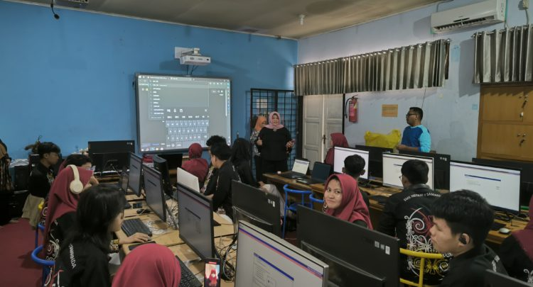
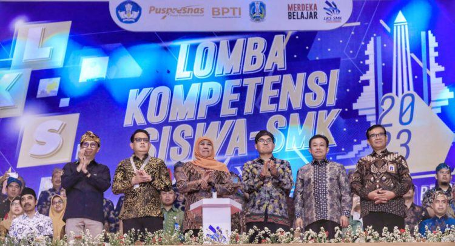

Pelaksaan Sertifikasi TOEIC 2024 implementasi SertifikasiInternasional Kemampuan Bahasa Inggris TOEIC 2024 Di SMKN Negeri7 Samarinda
Diupload pada 27-08-2024 oleh Admin

Dalam rangka meningkatkan daya saing global ditengah perkembangan
era teknologi ini, Direktorat SMK bekerjasama dengan PT
Internasional Test Center kembali menyelenggarakan kegiatan
fasilitasi peningkatan kompetensi dan sertifikasi Bahasa Asing siswa
SMK dengan Test Of English For International Communication (TOEIC).
Program ini bertujuan untuk meningkatkan kemampuan
bahasa inggris siswa Sekolah Menengah Kejuruan (SMk), mempersiapkan
mereka untuk dapat menghadapi tantangan global, dan memberikan
sertifikasi yang diakui secara internasional melalui ujian
TOEIC...
Baca selengkapnya
Partisipasi Berharga SMK Negeri 7 Samarinda Dalam LKS Nasional 2023
Diupload pada 25-08-2024 oleh Admin

Tanggal 23-28 Oktober 2023 adalah momen penting bagi para siswa dari
berbagai sekolah menengah kejuruan di seluruh Indonesia. Kompetisi
tingkat nasional yang dikenal dengan nama LKS (Lomba
Kompetensi Siswa) Nasional telah berlangsung di Surabaya, Jawa
Timur, dan menjadi ajang unggulan dalam menunjukkan kemampuan dan
potensi siswa dalam berbagai bidang keahlian. Salah satu
sekolah yang berpartisipasi aktif dalam ajang bergengsi ini adalah
SMK Negeri 7 Samarinda...Baca selengkapnya